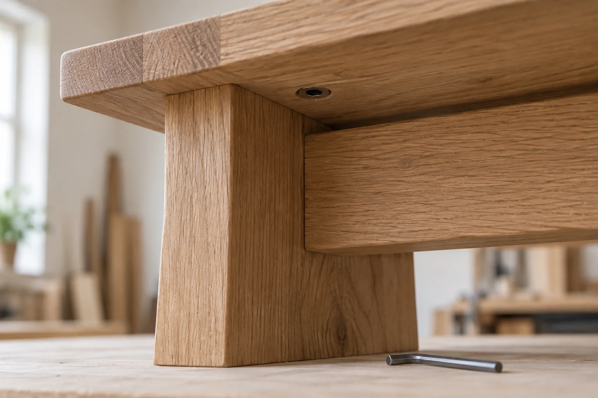

The grain is part of the piece. So are the way an edge meets your hand, how a finish changes the tone, and the attention a surface asks for over time.
01 / LIGHTER
Natural oak
Clear hardwax-oil appearance, showing the pale oak and its natural grain. Confirm the physical sample and final finish specification.
Illustrative screen colour, not a photograph of a physical finish sample. Product photographs show Natural oak.
02 / DEEPER
Warm brown oak
A warm brown stain beneath a hardwax-oil finish. The timber remains oak; colour and grain require physical sample approval.
Illustrative screen colour, not a photograph of a physical finish sample. Product photographs show Natural oak.

Under the surface
A detail should have a reason.
The collection uses solid oak and accessible assembly points. That gives a future service conversation a place to begin: identify the piece, the finish and the affected part before deciding what work it needs.
Do not loosen fixings or apply an unconfirmed treatment. Repair methods and replacement parts depend on the actual piece and its condition; a photograph cannot promise a repair.
Care, without ceremony
Small habits. A better-kept surface.
01
Soft cloth. Dry finish.
Dust with a soft cloth. For routine cleaning, use a lightly damp cloth and dry promptly. Avoid leaving water on the surface or using an unconfirmed cleaning product.
02
Protect where life happens.
Use coasters and heat protection. Lift pots, books and other objects rather than dragging them. Blot spills promptly, then dry; wet clothing should not stay on the bench.
03
Consider the room.
Keep indoor furniture away from direct heat sources and persistently damp places. Check the access route and room position before moving a piece; lift it with suitable help.
04
Ask before refinishing.
The selected finish determines the care method. Confirm its written instructions before using an oil, abrasive or repair product. Test and restoration work belong in a separate service discussion.
General care principles were checked against Ethnicraft's oiled-oak care guidance. Formstead's actual finish specification would take precedence; no external care product is endorsed here.
Before making
See the sample. Agree the details.
A screen cannot approve a colour. For a real commission, review a physical sample, confirm the chosen dimensions and agree the written specification before production.
For Lowline in particular
Storage needs a considered position.
Discuss the room, what will be stored and any restraint or wall-fixing plan. Wall construction and fixing suitability vary. Lowline is not a seat or climbing product, and no tested load or tip-resistance rating is stated.